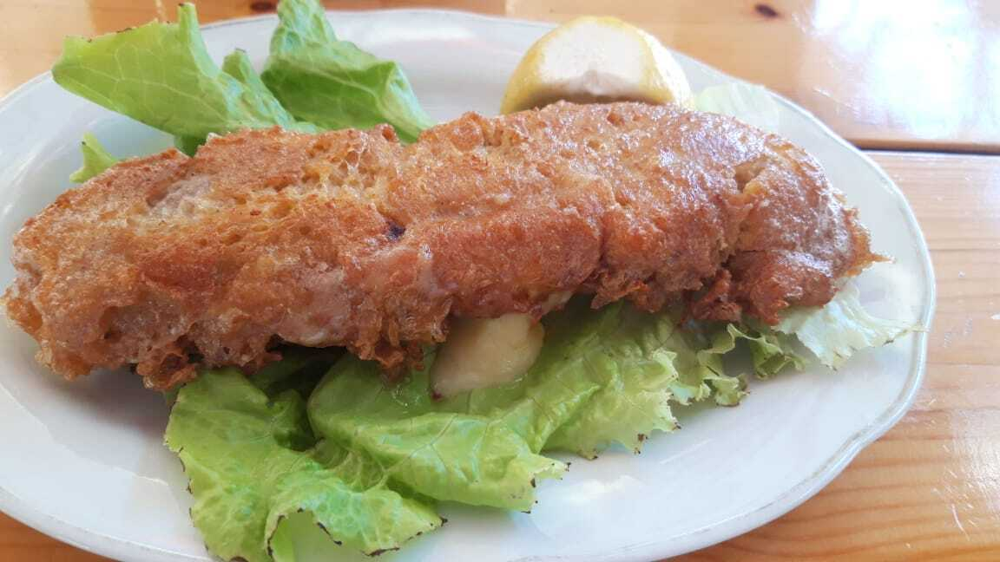

Bifteku i Beratit, A.k.a Vioneza

Vioneza e mirë, por jo e lirë.
Ky gatim është specialitet i Beratit, por në Kucovë e bëjnë më të mirë.
Mos dilni nga qarku i Beratit pa provuar këtë gjë të shemtuar.
Kjo nuk është një gatim për 3 shokë në dhomë!
Përbërësit:
- Mish i grir (vici)
- Një copë e madhe djathi kackavall
- Vezë
- Therrime buke
- Një erëz po u ndodhet verdall
Përgatitja e Recetës:
- Marrim copën e djathit të kackavallit dhe e mbeshtjellim me mishin e grir.
- Këtë gjë që formuam e zhysim në një enë me vezë të rrahura.
- E nxjerrim nga ena me vezë dhe e fusim në një tasë të mbushur me therrimet e bukës.
- E nxjerrim nga ena me therrime dhe e fusim në enën me vezë dhe prap në enën me therrime.
- Me pas e hedhim në vaj të nxehtë për ta skuqur ose në ngrirje të frigoriferit.
Kthehu te faqja kryesore